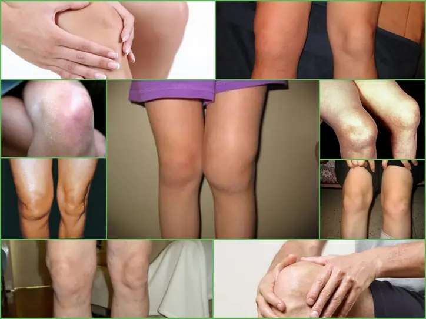
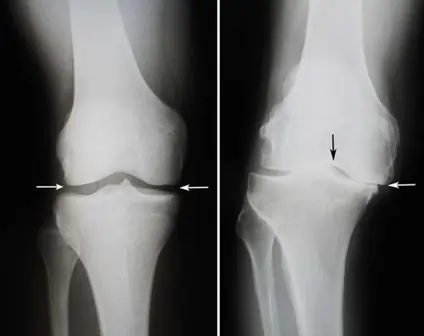
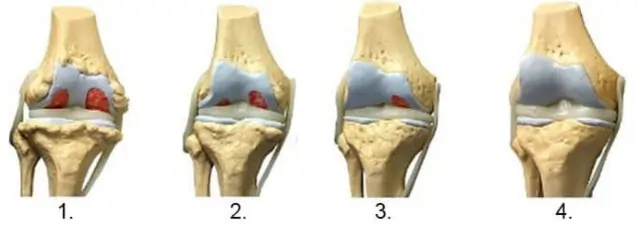
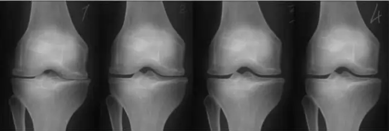
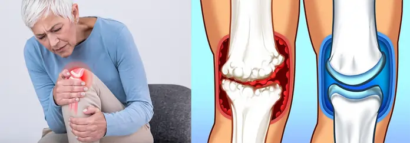
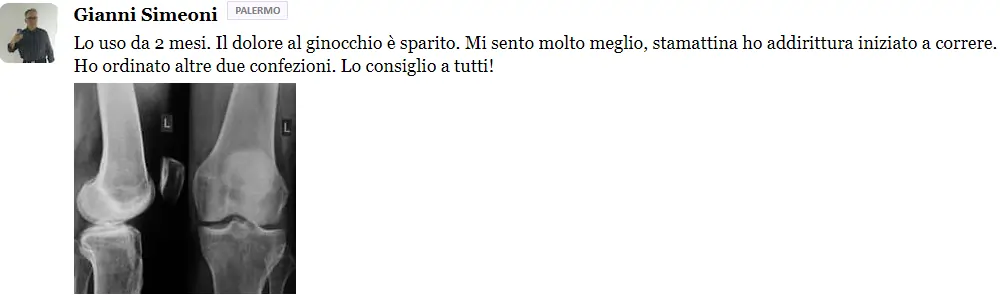
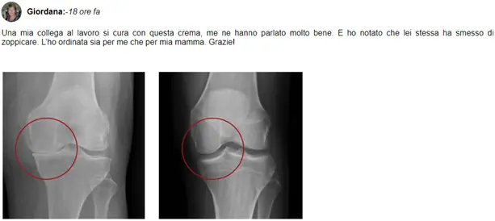
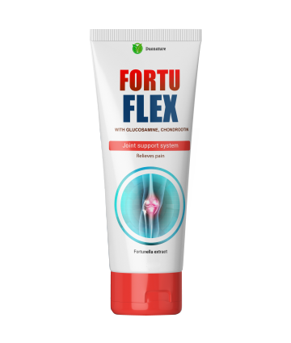

"Quando le articolazioni non permettono di vivere una vita piena, non resta che sperare in un miracolo!"- Un'intervista esclusiva con l'uomo leggendario che ha fatto un miracolo!

Oggi abbiamo un ospite speciale, il leggendario inventore e scienzato Matteo Bassetti.
— Ciao Matteo! Vuoi raccontarci qualcosa di te?
Sono nato e cresciuto a Genoa. Ho una laurea in medicina, ho finito gli studi nel 1995. All'università ho conosciuto la mia futura moglie Maria. Fino al 2011 ha lavorato come medico ortopedico.
— È interessante. Ma cosa è successo nel 2011 e perché hai lasciato il tuo lavoro?
Nel 2009, a Maria hanno diagnosticato l'artrosi del ginocchio. Devo ammettere che è stato un punto di svolta nella nostra vita, anche se allora sembrava una prova insopportabile. Per 2 anni, abbiamo provato di tutto: fisioterapia, abbandono dell'attività fisica, complessi vitaminici (condroitina, glucosamina, MSM e altri), gel, unguenti. Tutto è stato invano. Niente ha funzionato, eravamo disperati. Non riuscivo a credere che con la mia laurea in medicina non potessi fare nulla per aiutare mia moglie. Ero veramente deluso del nostro sistema sannitario: davvero non ci fosse nessun modo per dare una vita lunga e felice alle persone? Così ho iniziato le mie ricerche.
 — Quali ricerche? Possiamo saperne di più?
Quando ti rendi conto che tua moglie tra qualche anno potrebbe smettere di camminare, fai di tutto per impedirlo. Ho iniziato le ricerche. Ho studiato tutto che riguardava le malattie articolari, in modo diretto o indiretto. Ho studiato la fisiologia, la psicosomatica, la biochimica tante altre cose. Ho speso quasi tutti i miei soldi per imparare dai migliori professionisti dell'Asia, che sicuramente sapevano di più sulle articolazioni malate rispetto i medici occidentali.
TECNOLOGIA ARTROREVIVAL
Grazie all'ultima invenzione in ambito di biotecnologia,i componenti di Fortuflex raggiungono molto rapidamente i tessuti delle articolazioni danneggiate ed offrono un effetto fino a 10 volte più potente in quanto a recupero, rispetto a qualsiasi altro analogo!
I componenti della crema vengono completamente assorbiti dalle cellule, raggiungendo rapidamente le zone danneggiate, aiutandole a rigenerarsi.
Nel mese di dicembre 2011 sono stato in grado di raccogliere tutte le conoscenze che ho accumulato a quel punto. E ho capito che, mescolando certi componenti, potevo ottenere un rimedio efficace per eliminare i dolori articolari per sempre. Ma qui mi aspettava una sorpresa: i componenti necessari non erano in vendita nel nostro paese. Ho preso un prestito e ho ordinato loro dall'Asia. Dopo un mese i componenti sono arrivati, ma anche qui c’era un’altra sorpresa: nessuno voleva produrre il prodotto che volevo. Meno male che avevo gli amici universitari che mi hanno aiutato. Dopo 3 settimane ho ottenito una formula, che abbiamo subito provato con Maria.
Dio Onnipotente! Ero al settimo cielo!
— Cosa? Che cos'è successo?
Maria migliorava ogni giorno. Dopo 7 giorni di trattamento lei poteva già andare nei negozi, e quando comprava i prodotti, sul suo viso cominciava ad apparire quel sorriso che mi mancava tanto. Dopo altre 2 settimane, l'artrosi è completamente scomparsa! Non credevo ai miei occhi, ma le analisi hanno dimostrato che Maria era sana come un pesce. Ero flicissimo. È stata la vera vittoria!

1. Le conseguenze di una cattiva alimentazione. È necessario prendere «Fortuflex».
2. La rigenerazione della cartilagine articolare dopo 2 settimane di utilizzo di «Fortuflex».
3. La rigenerazione della cartilagine articolare dopo 3 settimane di utilizzo di «Fortuflex».
4. L'articolazione sana dopo la fine del trattamento con «Fortuflex».
La radiografia qui sotto mostra la rigenerazione dell'articolazione del ginocchio:
— Sei bravissimo, un esempio per molte persone nel nostro paese! Ma cos’è successo dopo?
Prima abbiamo semplicemente goduto la vita e apprezzato ogni momento, durante quel periodo Maria ha dato alla luce la nostra bella figlia, ringraziandomi per la mia formula, perché la gravidanza comporta un enorme carico sulle articolazioni.
Secondo l'Organizzazione Mondiale della Sanità, le articolazioni danneggiate causano fino al 91% di varie malattie, da quelle del tratta gastrointestinale agli ictus e agli infarti.
Una sera Maria mi ha chiesto, se ci siano tante persone in Italia con le malattie articolari? Abbiamo esaminato le statistiche e abbiamo scoperto che, purtroppo, è un problema abbastanza diffuso. Più di 1 milione di persone in Italia hanno varie malattie articolari con tanto di dolore. Quindi, lei mi ha fatto una domanda che ha cambiato per sempre la mia vita: "Potresti aiutare gli altri come hai aiutato me? Renderli felici?". Mi sono innamorato di lei come la prima volta. Questa donna è la cosa migliore che mi sia mai capitata. Ero d’accordo con lei. Ci sono voluti circa 3 anni per perfezionare la formula e creare un prodotto che si chiama “Fortuflex” è la cosa migliore che gli abitanti del nostro paese possono permettersi.
 — Sembra molto incoraggiante. Raccontaci di più di Fortuflex.
Io e Maria abbiamo fatto quello che nessuno ha fatto prima di noi. Fortuflex è una pomata rivoluzionaria, basata su:
- radici di erba del tuono
- rizomi di gramigna
- resina di cedro sibiriano
- oli di betulla e di menta
- molti componenti ausiliari
La maggior parte di questi componenti, purtroppo, non vengono venduti nel nostro paese, quindi portiamo loro dall'Asia.
Grazie alla sua formula unica, Fortuflex è in grado di curare qualsiasi malattia articolare:
- Artrite
- Artrosi
- Coxartrosi
- Osteoartrosi
- Osteocondrosi
- Osteocondrite
- Osteoporosi
- Lesioni del menisco
- Gonartrosi
— È incredibile! Sei il vero inventore del nostro tempo. Come l’hai fatto?
Non dimentichiamo che ci sono voluti molti anni di lavoro scrupoloso. L'anno prossimo dovremo festeggiare 10 anni di questo lavoro. Fino ad oggi, già 17 934 persone hanno ricominciato a vivere una vita piena, dimenticando i dolori articolari per sempre. Sapete, noi con Maria non volevamo guadagnare su questo. Volevamo soltanto aiutare la gente! A proposito, ogni mese facciamo una lotteria con i premi preziosi per le persone che usano i nostri prodotti: 
- Dove si può acquistare Fortuflex?
Purtroppo non è acquistabile in farmacia. Le farmacie vendono solo prodotti delle grandi case farmaceutiche, che nella migliore delle ipotesi non aiutano, per non parlare dei gravi effetti collaterali.
Abbiamo un sito web ufficiale dove è possibile ordinare Fortuflex originale.
— Cosa le piacerebbe augurare ai nostri lettori?
Maria ed io abbiamo recentemente deciso di regalare una confezione di Fortuflex ai primi 50 spettatori del vostro programma che vorranno ordinarlo! Tutti possono approfittare di questa offerta fino al compreso! Dopodiché, non sarà più possibile ottenere Fortuiflex gratuitamente.
- Tante belle cose, amici!
SOLO OGGI! GRATIS
Loredana Mazzini
Ti sono molto grata per questo rimedio, Matteo. Era da tempo che cercavo qualcosa di simile. Grazie!
un'ora fa
Marina Armieri
Ho avuto l'artrosi. E adesso non l’ho più... è sparito per un corso di applicazione della pomata! Grazie per questo!
un'ora fa
Marie Claude Boyer
Lo stesso vale per me! È un rimedio molto efficace contro i disturbi articolari! I gomiti e le ginocchia non mi fanno più male.
un'ora fa
John Terra-Nova
Gregory, grazie per questo prodotto!!! Non solo hai salvato tua moglie, ma anche molte altre persone. Ho provato di recente ad applicare Fortuflex sul rachide cervicale, ho l'osteocondrosi, ora mi sento molto meglio. Spero che in futuro sarà ancora meglio!
un'ora fa
Gregory Cusanno
Andrea, non preoccuparti e continua a usare Fortuflex. La cosa principale è seguire le istruzioni per l'uso della pomata.
Cordiali saluti, Gregory.
un'ora fa
Alessio Mortellaro
Ragazzi, aiutatemi! Sono stanco di mal di schiena. Il disagio e il dolore non danno tragua. Non so più cosa fare. Prendo diverse pasticche, applico periodicamente tutti i tipi di gel sulla zona dolente, ma non mi aiuta niente:(
un'ora fa
Sergio Bertoli
Alessio, ordina Fortuflex, non te ne pentirai. Anche io avevo lo stesso problema, a causa delle articolazioni malate non riuscivo neanche a camminare. Grazie a mia madre, ho trovato questa pomata, lei mi ha consigliato di usarla. Ora non ho più problemi con le articolazioni!
un'ora fa
Nora Lapin
Come ordinare Fortuflex?
un'ora fa
Vito Principe
Nora, attraverso il modulo ufficiale. La crema mi ha aiutato molto.
un'ora fa
Nora Lapin
Vito, sì, grazie, l’ho già ordinata. Potresti dirmi, quanto tempo ci vuole per la consegna?
un'ora fa
Vito Principe
Antonella, attraverso il modulo ufficiale. La crema mi ha aiutato molto.
un'ora fa
Rachel Allen
L’ho ordinato per mia sorella due mesi fa. Ha sofferto a lungo dell'artrite. Come mi ha ringraziato dopo per aver rischiato e ordinato Fortuflex!
un'ora fa
Michele Regini
Rachel, è veramente così efficace?
un'ora fa
Vincenzo Samuzzo
Anche io ho sentito parlare di questo prodotto. Qualcuno dei miei amici ha ordinato qualcosa del genere. Ho problemi con la gamba dopo l'infortunio, già il secondo anno che ho dolori forti, i medici non mi hanno aiutato... ora ho letto questo articolo e ho deciso di ordinare Fortuflex. Ora faccio un ordine, lo proverò di sicuro.
un'ora fa
Alessandro Rivolta
Ragazzi, vi aiuta davvero? I farmaci e i medici ormai sono inutili per me
un'ora fa
Marilena Becci
Alessandro, certamente. L'effetto è molto forte, ma la cosa più importante è che non nuoce alla salute. Quindi, sbrigati a ordinare! Fortuflex mi ha aiutato a liberarmi completamente dei problemi alla schiena.
un'ora fa
Annalisa Silani
Grazie, Fortuflex mi ha aiutato davvero! L’ho ordinato proprio sul sito ufficiale! Non aspettare troppo, è meglio sbarazzarsi del problema ora, che poi capire che non riesci più a muoverti.
un'ora fa
Daniela Bianchi
Grazie Pietro! Se non fosse stato per lei, non avrei mai creduto nell'efficacia di questo Fortuflex! Mio marito per più di 5 anni ha avuto lo stesso problema di sua moglie. Ha sofferto terribilmente. E ora corre come se avesse di nuovo18 anni.
Il pacco è arrivato molto velocemente.
un'ora fa
Pietro Romani
Daniela, non ringraziarmi. Sarebbe meglio se mi avesse detto, per favore, quanto tempo ci è voluto per il recupero?
Cordiali saluti, Pietro
un'ora fa
Daniela Bianchi
Pietro, circa un mese di applicazione della pomata, ora si muove liberamente, non si lamenta del dolore. Sono molto contenta che stia bene.
un'ora fa
Pietro Romani
Daniela, ho capito, grazie.
Cordiali saluti, Pietro
un'ora fa
Elena Cigno
Il risultato è superato le mie aspettative. La sciatica è scomparsa per sempre! L’ho ordinato per le mie amiche, una ha il mal di schiena, l'altra invece ha il dolore al gomito.
57 minuti fa
Marta Navarro
Oggi sono riuscita a prenotare il prodotto...
Ho lasciato il mio numero di telefono sul modulo d'ordine e quasi subito mi hanno richiamato per confermare la richiesta. Voglio finalmente vivere in pace, godermi le camminate.
55 minuti fa
Alice Sica
L’ho ordinato per me, l'artrite mi tormentava terribilmente per diversi anni. Ogni volta con la pioggia o il cambiamento del tempo mi sentivo semplicemente senza gambe. Fortuflex mi ha aiutato in un paio di settimane. Non riuscivo nemmeno a pensare che fosse possibile.
53 minuti fa
Anna Ranieri
Un nostra amica ha una farmacia privata dove questa crema costa quasi 100 euro, per cui non ho potuto acquistarla. Ma qui l'ho visto gratis e l'ho ordinato subito, perché la mia pensione è esigua e non butto i soldi al vento. Il ginocchio non mi fa più male e posso lavorare in giardino senza alcun dolore. Grazie!
48 minuti fa
Pietro Romani
Sottolineo che Fortuflex può essere ordinato solo dal nostro sito ufficiale, quindi non fate errori, cliccate sul link qui sopra!
36 minuti fa
Ida Freddo
Fortuflex mi ha aiutato a liberarmi di gotta in un solo corso di applicazione, ora lo tengo sempre nell'armadietto dei medicinali, per qualsiasi emergenza.
36 minuti fa
Massimo Bardi
L’ho ordinato per me. Ha funzionato benissimo. Se hai problemi alle articolazioni, ti consiglio vivamente, credimi: tutto passerà subito. La consegna è veloce, solo di tre giorni.
39 minuti fa
Pietro Romani
Massimo, grazie! Cerchiamo di consegnare Fortuflex il più rapidamente possibile alle persone che potranno finalmente dimenticare i problemi articolari.
Cordiali saluti, Pietro
36 minuti fa
Lucia Cucchi
Ho letto l'articolo e ho deciso di ordinare la pomata immediatamente per provarla finché c’è questa promozione. Mi ha ispirato la storia di Pietro e sua moglie. Il fatto è che i farmaci “normali” mi hanno aiutato solo per un po’, dall'artrite, come mi è stato detto, è difficile liberarmi. Ora vi racconto dei miei risultati. Mi hanno consegnato Fortuflex molto rapidamente. Già il primo giorno mi sento così sollevata che non potevo non scriverne qui. Grazie mille, ora posso vivere bene!
31 minuti fa
Ilaria Colucci
Ragazzi, dove lo avete ordinato? Nelle farmacie questo rimedio non viene venduto, ma in Internet ho paura di comprarlo. Non vorrei ricevere un prodotto falso, dal quale non avrò nessun beneficio.
27 minuti fa
Pietro Romani
Sottolineo che Fortuflex può essere ordinato solo dal nostro sito ufficiale, quindi non fate errori, cliccate sul link qui sopra!
E attenzione ai falsi, per favore.
Cordiali saluti, Pietro
15 minuti fa